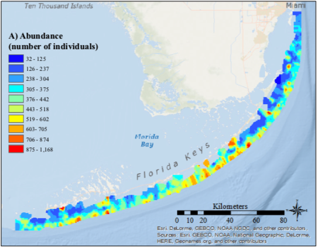
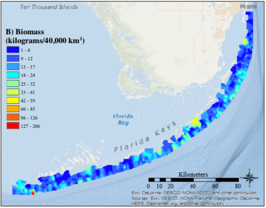
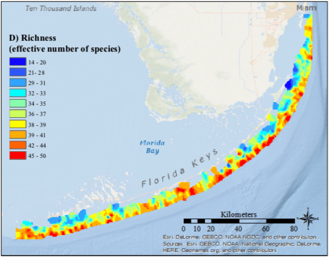
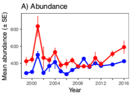
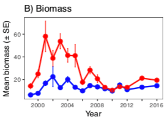
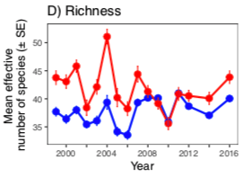

The maps and timeseries are from:
Hepner, Megan E., “Reef Fish Biodiversity in the Florida Keys National Marine Sanctuary” (2017). Graduate Theses and Dissertations. https://scholarcommons.usf.edu/etd/7408
See Also: